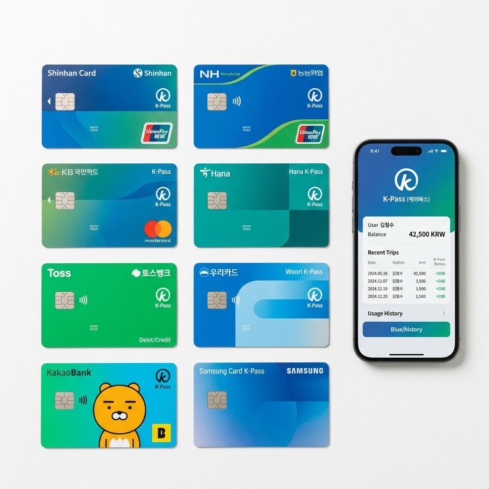
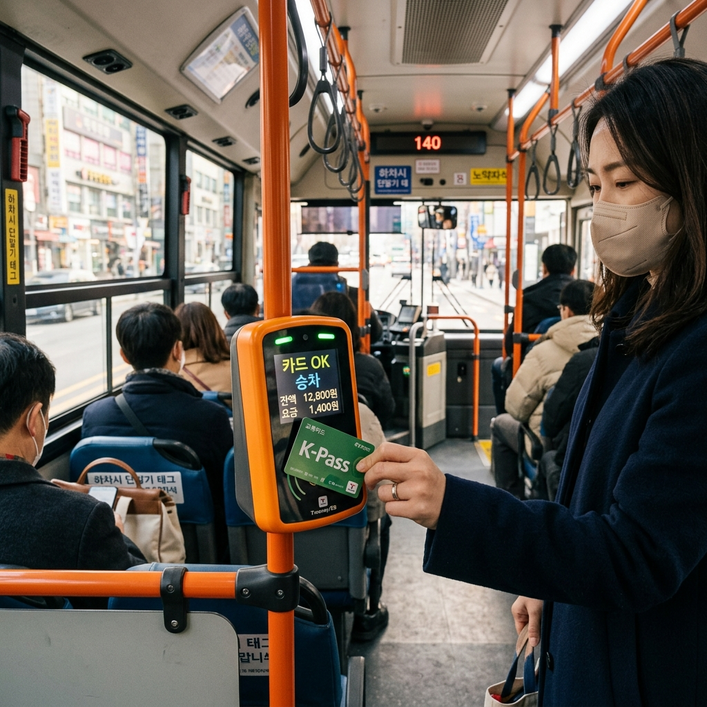

K-패스는 2024년 5월 출시된 정부 대중교통 환급 프로그램입니다.
월 15회 이상 버스·지하철을 이용하면 초과분 지출의 일정 비율을 다음 달에 교통카드 캐시 또는 포인트로 돌려줍니다. 충전식 선불카드와 신용·체크카드 모두 사용 가능합니다.
2026년 주요 변화 두 가지: 첫째, 65세 이상 고령자에게 30% 환급율이 신설됐습니다(기존 일반요금 내던 고령자 대상). 둘째, "모두의 카드"라는 이름의 정액패스 개념이 추가됐습니다. 일정 금액을 내고 해당 금액 이상 이용하면 추가 부담 없이 이용하는 형태로, 기존 회당 환급 방식과 다른 선택지입니다.
| 이용자 유형 | 환급율 | 비고 |
|---|---|---|
| 일반 | 20% | 기본 적용 |
| 청년 (19~34세) | 30% | 나이 자동 인증 |
| 고령자 (65세 이상) | 30% | 2026년 신설 |
| 저소득층 | 53% | 자격 심사 필요 |
환급 조건의 핵심: 월 15회 이상 이용분에서, 15회를 초과한 이용 금액에 위 비율을 곱한 금액이 환급됩니다. 월 최대 환급 한도는 상한이 있으며, 정확한 상한은 공식 채널에서 확인하시기 바랍니다.
K-패스 환급은 카드 종류(신용/체크)에 관계없이 동일하게 적용됩니다.
차이는 카드사가 제공하는 추가 혜택에서 납니다. 신용카드는 실적 조건을 충족해야 추가 할인·포인트를 받을 수 있는 경우가 많고, 체크카드는 실적 조건 없이 기본 교통 혜택이 적용되는 경우가 많습니다.
신용점수가 낮거나 체크카드를 선호하는 분, 소비 통제를 원하는 분은 체크카드 계열을 선택하는 것이 보통입니다. 반면 월 소비가 일정 금액 이상이고 카드 실적 조건을 채울 수 있다면, 신용카드 추가 혜택이 체크카드보다 환급 금액을 더 키워줄 수 있습니다.
2026년 기준 19개 카드사가 K-패스에 참여 중입니다.
주요 카드사별 특징을 대략 정리하면:
※ 카드사별 혜택 및 실적 조건은 시기에 따라 달라집니다. 반드시 각 카드사 공식 홈페이지 또는 kpass.go.kr에서 확인 후 발급하세요.
"모두의 카드"는 기존 K-패스와 다른 접근입니다.
월 정액을 내면 그 금액 안에서 교통비를 이용하는 방식으로, 정해진 금액 이상 쓰지 않아도 됩니다. 매달 교통비 지출이 불규칙하거나 예산을 미리 정해놓고 싶은 분에게 적합합니다.
기존 K-패스 환급형은 많이 쓸수록 환급 금액이 커지는 구조라 대중교통 이용이 많은 출퇴근족에게 유리합니다. 반면 모두의 카드는 정액 예산 관리에 초점이 맞춰져 있습니다. 두 가지 중 어느 쪽이 자신의 이용 패턴에 맞는지 비교해 보시기 바랍니다.

다음은 K-패스 이용을 시작하기 위한 일반적인 절차입니다. 세부 단계는 카드사마다 다를 수 있으므로 반드시 각 기관 안내를 병행해 확인하세요.
K-패스를 처음 시작할 때 자주 발생하는 혼동이 있습니다.
환급 조건 착각: "매달 15회 이상" 조건은 달마다 초기화됩니다. 이번 달 20회 이용했다고 다음 달에 자동으로 혜택이 이어지지 않습니다. 매달 15회를 채워야 합니다.
환급 대상 범위: K-패스는 대중교통(버스·지하철) 이용에 한합니다. 택시, 기차(KTX 등), 고속버스는 포함되지 않습니다.
카드 비활성화: 등록 후 해당 카드를 실제로 교통카드로 사용해야 집계됩니다. 앱에 등록만 하고 다른 카드로 대중교통을 이용하면 환급 대상이 되지 않습니다.
| 항목 | K-패스 | 기후동행카드 |
|---|---|---|
| 운영 주체 | 국토교통부 (전국) | 서울시 (수도권 일부) |
| 이용 지역 | 전국 대중교통 | 서울 지하철·버스 (일부 경기·인천) |
| 혜택 방식 | 환급 (월 15회 이상) | 정액권 (월 정액 선불) |
| 적합한 사람 | 전국·이동 많은 출퇴근족 | 서울 집중 이용, 무제한 원하는 분 |
서울 위주로 이동하고 교통비 지출이 많다면 기후동행카드가 상한 없이 쓸 수 있어 유리할 수 있습니다. 반면 지방 거주자이거나 전국 이동이 잦다면 K-패스가 유일한 선택입니다. 두 카드는 중복 사용이 안 되므로 자신의 생활 패턴에 맞춰 선택해야 합니다.